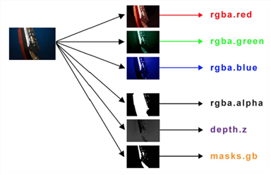

在 Nuke 产品，您可以将每个节点的输出作为新通道分配，并将它们传递给脚本中的下一个节点。当您需要重新使用特定通道时 (例如，对头发应用颜色校正)，您只需从下游颜色校正节点中选择包含遮罩的通道。
Nuke 产品支持多达 1023 个频道的图像数据。这在处理计算机生成 (CG) 元素时提供了额外的好处，尤其是当这些元素以 OpenEXR 格式呈现时。
|  |
| Nuke 产品可以包括数据流中的多个通道并在其中运行。 |
例如，您的 3D 部门可以为特定的 CG 元素 (美丽、填充、背光、反射、阴影等) 渲染多个照明通道。) 。Exr 序列，然后你可以读入 Nuke 脚本，或 comp。您可以访问所有的渲染通道内存储 。Exr 脚本中任何下游节点的序列。
您可以选择通过使用镜面反射通道作为特定颜色校正运算符的遮罩来仅对 CG 元素的高光进行颜色校正。这种方法再次具有保持 Nuke Comp 没有不必要的复杂分支 -- 几乎所有渲染过程和遮罩都可以通过 comp 中的单个管道传递。
的 通道 本章介绍了如何充分利用 1023 通道的工作流程。
|
|